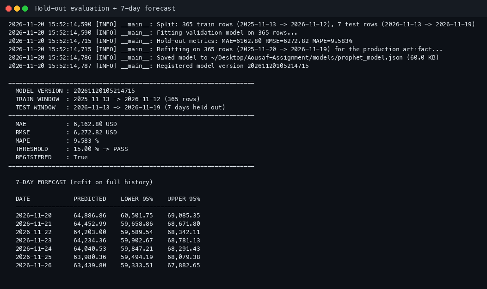
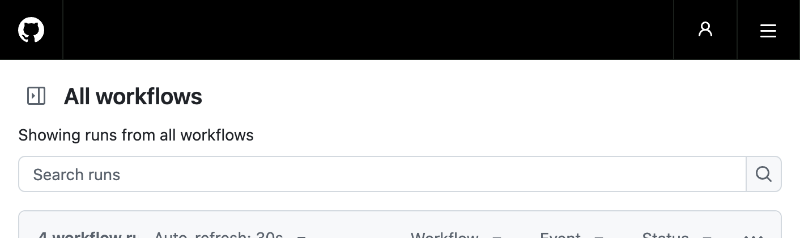
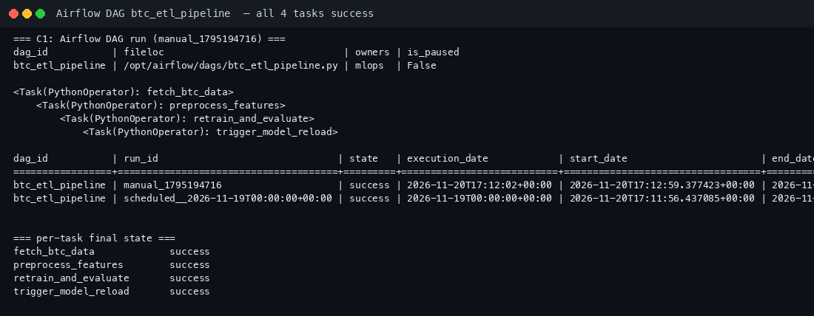
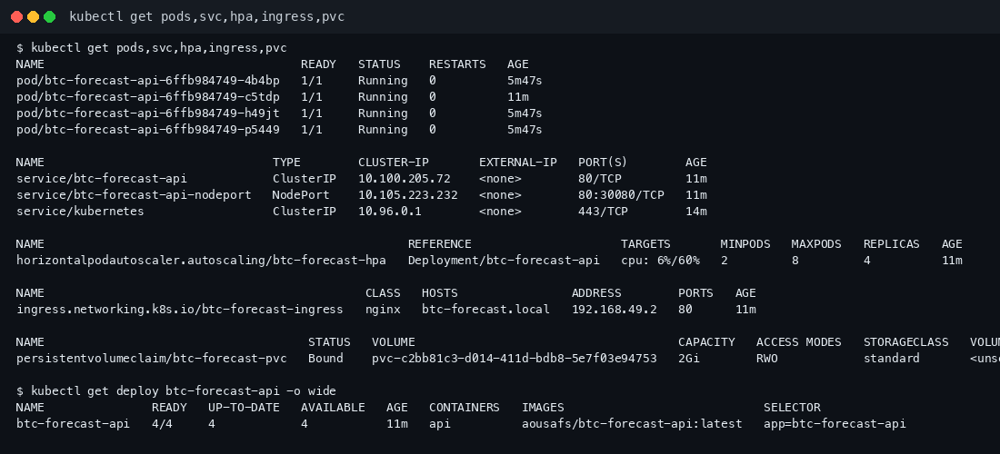
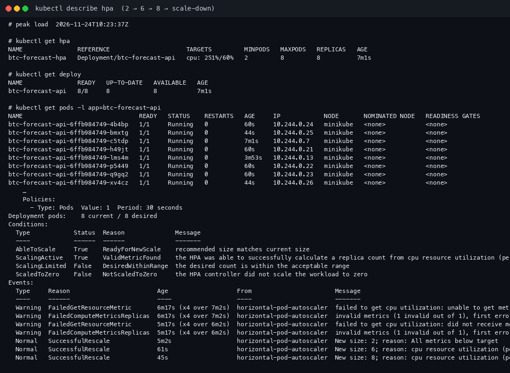
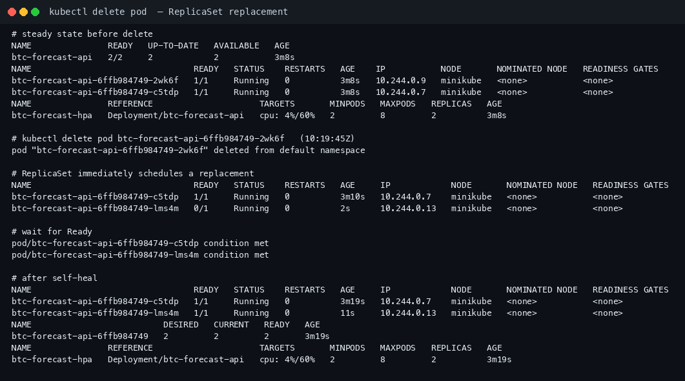
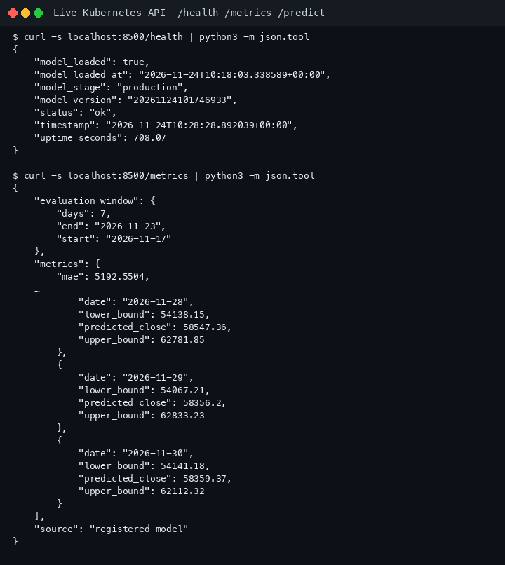

Assignment 3 — Flask, Docker, GitHub Actions, Airflow, Kubeflow & Kubernetes · 60 marks
| Author | Aousaf Suleman (Aousaf90) |
| Repository | github.com/Aousaf90/btc-forecast-mlops |
| Docker image | aousafs/btc-forecast-api (tags: latest, commit SHA) |
| Model | Facebook Prophet 1.1.6 · 7-day daily close · hold-out MAPE 8.48% (cluster run) |
The system ingests daily BTC-USD OHLCV, trains a time-series model, and serves a 7-day closing-price forecast as a production REST API. Data is pulled with automatic failover (yfinance → Binance → CoinGecko). Orchestration is an Airflow DAG (daily ETL / retrain / reload) plus a compiled Kubeflow pipeline spec. The API is containerised, published by GitHub Actions, and deployed on Minikube with ConfigMap/Secret, PVC, 3-replica Deployment, ClusterIP+NodePort Services, HPA (2–8 @ 60% CPU) and NGINX Ingress.
btc_etl_pipeline @dailyPOST /reload/app/modelsGET /health · POST /predict · GET /metrics · POST /reload/health, requests 100m/128Mi, limits 500m/512Mi, HPA 2→8, host btc-forecast.localFigure 1. End-to-end architecture. The Airflow worker writes prophet_model.json; API replicas read it from the PVC and hot-reload without a rolling restart.
Why Prophet, not NeuralProphet or LSTM. NeuralProphet pulls PyTorch (~800 MB) and would roughly triple the image for no established gain at a 7-day daily horizon. An LSTM would add a GPU-oriented stack the Minikube node does not have. Prophet fits in ~0.2 s on CPU, serialises to a 60 KB JSON artifact (model_to_json, never pickle — a fitted Prophet does not round-trip reliably across versions, and Airflow writes what Flask reads), and needs identical pins in both images.
Hyperparameters were not guessed. A rolling-origin backtest of 12 non-overlapping 7-day windows chose a 365-day training window and changepoint_range=0.95. Full 5-year history with Prophet’s default changepoint_range=0.8 scored mean MAPE 14.70%; the tuned config scored mean MAPE 3.49% (best 0.92%, worst 9.58%). The 365-day window dominates: Prophet fits one global piecewise-linear trend, so 2021–2023 BTC regimes bias a 7-day extrapolation. The default changepoint range also places no changepoints in the most recent 20% of the series — exactly the stretch a 7-day forecast extrapolates from.
Regressors. 7/30-day moving averages and volatility are computed and persisted (the Airflow preprocess task requires them) but are not passed to add_regressor. A Prophet regressor needs a value for every future date; a 7-day MA over the next 7 days depends on the prices being forecast. Feeding an extrapolated guess would leak that guess into the model. This is a named tradeoff, not an omission.
Registration gate. A retrained model replaces the live artifact only if hold-out MAPE ≤ 15%. That sits above the worst backtest window (9.58%, a week BTC fell ~$70k→$62k) and below the untuned baseline’s 14.70% mean, so a genuinely broken model is still caught.
app/app.py exposes four JSON endpoints behind gunicorn (gunicorn --bind 0.0.0.0:5000 --workers 1 --threads 2 app:app). One worker is deliberate: each worker deserialises its own Prophet (~80–116 MB measured) against the 512Mi pod limit.
| Method | Path | Contract |
|---|---|---|
| GET | /health | Always 200 while the process is serving; body includes status, uptime_seconds, model_version, model_loaded. Used by both liveness and readiness probes. |
| POST | /predict | Optional forecast_days (1–90, default 7) or historical_data. Returns dated predictions with 95% intervals. |
| GET | /metrics | MAE / RMSE / MAPE from the latest validation run. |
| POST | /reload | Re-reads the PVC artifact (called by the DAG). Returns changed: true/false. |
Why /health is never 503 for a missing model. The rubric points both probes at /health. Returning 503 when the PVC is empty would restart-loop a healthy pod on first boot, before Airflow has trained anything. /predict is the endpoint that refuses with 503. Validation errors are 400 (null/non-object body, non-integer forecast_days, too-short history); unknown routes 404; wrong method 405; unhandled exceptions 500. All bodies are JSON, never HTML. 85 pytest tests cover the API and pipeline (46 + 39), 10.52 s, all passing.

Figure 2. Part A training + forecast (also screenshots/logs/A1_*.txt, A3_pytest.png — 85 tests passed).
app/Dockerfile is multi-stage on python:3.10-slim: dependencies install into a venv in the builder; only the venv is copied into the runtime. The process runs as non-root appuser (uid 1000, matching the PVC fsGroup). Matplotlib is stripped at build time — Prophet guards the import — and a smoke test fails the build if that ever breaks inference. scikit-learn/scipy are not dependencies (metrics are plain numpy).
| Build | Size | Notes |
|---|---|---|
| Unoptimised single-stage (sklearn present) | 913 MB | Baseline |
| Multi-stage, no sklearn, matplotlib stripped | 513 MB | −400 MB (−44%) |
| Drop sklearn+scipy | ~167 MB saved | Never imported |
| Strip matplotlib | ~34 MB saved | Plotting unused |
| Multi-stage (gcc, pip cache stay in builder) | ~200 MB saved |
docker-compose.yml runs Flask + Airflow (LocalExecutor) + Postgres, sharing a named volume that stands in for the PVC. Full handoff was proven in compose: Airflow trained → API saw the artifact → POST /reload returned changed: true → a new model_version was served. Compose and Minikube are not run together (RAM).
.github/workflows/ci_cd.yml triggers on push/PR to main: flake8 + black, then 85 pytest tests, then (main only) buildx push to Docker Hub as latest, full SHA and sha-<short>, using DOCKER_USERNAME / DOCKER_PASSWORD secrets. Latest green run #44799899698: lint 13 s, pytest 48 s, build+push 35 s (GHA layer cache; Prophet is not rebuilt on app-only commits). Image: hub.docker.com/r/aousafs/btc-forecast-api (latest + SHA tags, linux/amd64, 111.81 MB compressed).

Figure 2b. GitHub Actions UI — three consecutive green CI/CD runs on main.
dags/btc_etl_pipeline.py is a daily DAG of four PythonOperators. Heavy imports (Prophet) live inside task callables: a module-level import stalled the scheduler (heartbeat recovered after 559 s) and left the DAG invisible to dags trigger. Parse time is now 0.135 s.

Figure 3. Manual DAG run — all four tasks success. Transcript: screenshots/logs/C1_airflow_dag.txt.
Reload uses requests against PREDICTION_API_URL, not SimpleHttpOperator, so no extra Airflow Connection is required on a fresh database. If the MAPE gate rejects the model, the reload task skips via XCom rather than POSTing a no-op.
kubeflow/btc_kfp_pipeline.py (KFP SDK 2.9) defines three container components — ingest, features, train — all running aousafs/btc-forecast-api:latest with commands verified to exist in that image. Compiled spec: kubeflow/btc_kfp_pipeline.yaml (schema 2.1.0, 5.7 KB). A full Kubeflow install was not deployed: it needs ~16 GB RAM; the rubric requires the YAML. PEP 563 (from __future__ import annotations) was omitted — it stringifies types and the compiler then rejects missing schema_title.
Verified on Minikube v1.39 (Kubernetes v1.37.0, docker driver, 2800 Mi / 3 CPU) with addons metrics-server and ingress. Manifests in k8s/ apply as kubectl apply -f k8s/ (the optional train Job seeds the PVC once). Numbers below are the graded values, implemented literally.
| File | What was applied |
|---|---|
configmap-secret.yaml | ConfigMap: MODEL_STAGE=production, LOG_LEVEL=INFO, PORT=5000. Secret: dummy base64 API_KEY / COINGECKO_API_KEY (public APIs need no key). Both mounted via envFrom. |
pvc.yaml | 2 Gi RWO, Bound on standard. Mounted at /app/models. Historical CSVs live at /app/models/data so they survive restarts too. |
deployment.yaml | 3 replicas; liveness GET /health initialDelaySeconds: 15, periodSeconds: 10; readiness GET /health; requests 100m / 128Mi; limits 500m / 512Mi; non-root uid 1000, fsGroup: 1000. |
service.yaml | ClusterIP btc-forecast-api and NodePort btc-forecast-api-nodeport (30080), both port 80 → targetPort 5000. |
hpa.yaml | minReplicas 2, maxReplicas 8, CPU target 60% (autoscaling/v2). |
ingress.yaml | NGINX, host btc-forecast.local → ClusterIP:80. ADDRESS 192.168.49.2. |
The 3-vs-2 replica mismatch is in the spec. The Deployment starts at 3; the HPA min is 2. Under idle CPU (4%) the HPA correctly scaled the Deployment down to 2. Both numbers were implemented as written rather than “fixed”.

Figure 4. Cluster overview. Ingress routing confirmed in-cluster with Host: btc-forecast.local. On Docker-Desktop/Mac the node IP is not reachable from the host; use minikube tunnel or port-forward.
Observed RSS with the model loaded is 75–91 Mi, inside the 512Mi limit (OOMKill is on limits, not requests). The 128Mi request being below peak usage is therefore acceptable.
Idle CPU was 4% of request. Concurrent in-cluster clients (scripts/loadgen.yaml, three pods of 12 threads each POSTing /predict) drove utilisation to 251% of the 100m request (250–365 mCPU per pod on kubectl top). The HPA rescaled 2 → 6 → 8 within ~16 seconds of seeing the metric, and all eight pods reached Ready. Peak RSS stayed 76–91 Mi — still under 512Mi.

Figure 5. HPA scale-out 2→6→8 at 251% CPU. Full log: screenshots/logs/D5_hpa_scaled.txt. Load was generated in-cluster (scripts/loadgen.yaml); macOS AirPlay owns :5000 so host Locust is not usable here.
At the HPA steady state of 2 replicas, pod btc-forecast-api-6ffb984749-2wk6f was deleted. The ReplicaSet scheduled a replacement immediately (lms4m, IP 10.244.0.13). It was Running at 2 s and Ready at 11 s; kubectl wait --for=condition=Ready returned on both remaining pods. Desired stayed 2/2 — Kubernetes replaced the killed pod rather than leaving a hole. The new pod loaded the model from the PVC on boot (model_loaded: true, version 20261124101746933), confirming the volume outlives the container.

Figure 6. Self-healing after kubectl delete pod. Transcript: screenshots/logs/E1_self_healing.txt.
A Kubernetes Job (k8s/train-job.yaml) using the same image fetched data (yfinance empty → Binance, 1,824 rows), engineered features (1,794 rows), trained Prophet (hold-out 2026-11-17→23: MAE $5,192.55, RMSE $5,343.90, MAPE 8.482%, gate PASS), wrote the JSON artifact to the PVC, and POSTed /reload. Querying the live Service:

Figure 7. Live 7-day forecast from the Kubernetes Service. CI/CD is green (Figure 2b); Airflow DAG success is Figure 3.
requirements.txt shared core, requirements-api.txt for the API only) with a build guard in airflow/Dockerfile.airflow-init chowns them to uid 50000.